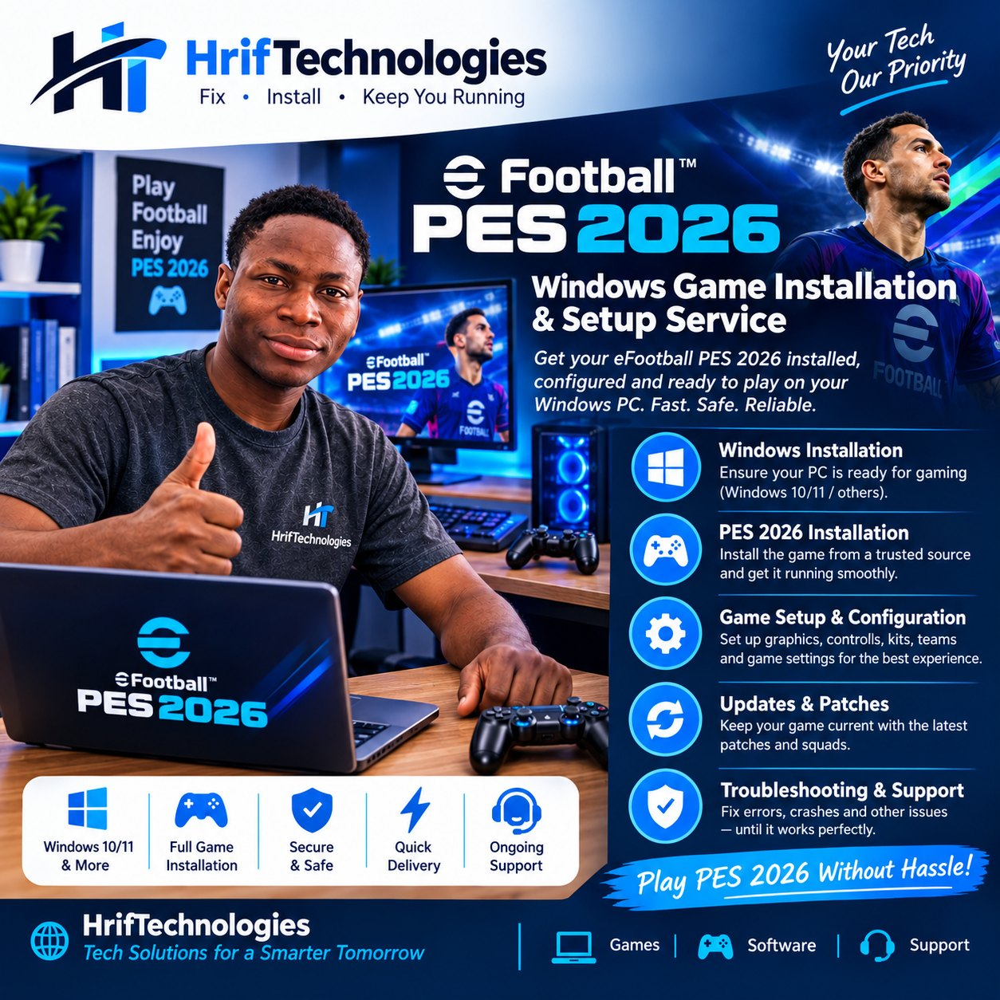
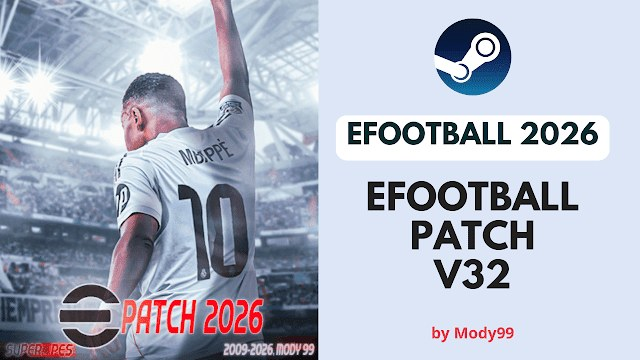

HrifGames: we install and set up your PC games
Get eFootball PES 2026 installed, set up and ready to play on your Windows PC. We also fix game errors, crashes and slow performance.
Order game installationMessage on WhatsAppCall us
PES 2026 installation and setup on Windows
Send us your PC details first, or bring the computer to us. We check that it can run the game, install it, set it up and test that it plays.
- Works on Windows 10, Windows 11 and other versions
- Full game installation from a trusted source
- Graphics, controls, kits, teams and game settings
- Updates, patches and squads
- Help afterwards if the game gives errors
What HrifGames does
Five steps from a PC that cannot run the game to a game you can play.
Windows ready for gaming
We check Windows 10 or 11, drivers and free space, and fix what stops the game from running.
PES 2026 installation
The full game installed and running smoothly on your PC.
Setup and configuration
Graphics, controls, kits, teams and settings chosen for your PC.
Updates and patches
The latest game updates, patches and squads installed and tested.
Troubleshooting and support
Errors, crashes and other issues fixed until the game works.
Patches and squad updates
A patch changes the game's squads, kits, faces and stadiums. The picture shows eFootball Patch 2026 V32 by Mody99, one of the community patches we can install.
We install the patch that matches your game version, test that the game still starts, and show you how to switch it on. If a patch causes a crash, we remove it and restore the game.
Order a patch install
How to order
- Press Order online and fill in your name, phone number and PC model.
- Send the order by WhatsApp or email.
- We reply with the price and when we can start.
- We install and test the game, then hand the PC back or finish remotely where possible.
Before you order
Tell us your computer make and model, your Windows version, and how much free space is on the C: drive. A modern game needs tens of GB of free space and a graphics card that can run it. If you are not sure, send what you know and we will check.
Game fix guides
Tap a guide to open the steps. Search if you know what is going wrong.
The game will not start or closes straight awayYou click Play, nothing happens, or the game closes after the logo.
- Restart the PC and try again. Close other programs first.
- If you play through Steam: open Library, right-click the game > Properties > Installed Files > Verify integrity of game files. Wait until it finishes.
- Right-click the game or its shortcut > Properties > Compatibility > tick Run this program as an administrator.
- Update the graphics driver: right-click Start > Device Manager > Display adapters > right-click your graphics card > Update driver. Or download the latest driver from the maker's website (NVIDIA, AMD or Intel).
- Install Windows updates: Settings > Windows Update > Check for updates.
- Check free space on C:. Games need room for updates and temporary files.
- Temporarily turn off any overlay or antivirus that blocks the game, then try again. Turn protection back on after the test.
- If it still fails, send us the error message and your PC model.
The game lags or the frame rate is lowPlayers stutter, the picture freezes, or the replay is slow.
- Close browsers and other programs. Press Ctrl + Shift + Esc and check that Task Manager shows free memory and low disk use.
- Plug the laptop into power. Then choose a performance power plan: Settings > System > Power & battery > Power mode > Best performance.
- In the game's settings lower the resolution, shadows and effects. Turn off anything marked high or ultra.
- Update the graphics driver (see the first guide).
- Turn on Game Mode: Settings > Gaming > Game Mode.
- Check the temperature. If the laptop is very hot, clean the vents and use it on a hard surface.
- If the game is on a hard disk (HDD), move it to an SSD if you have one. An SSD upgrade and more RAM help older PCs most.
The controller is not detectedThe game ignores your gamepad, or only some buttons work.
- Unplug the controller, plug it into another USB port, and try again. Try a different cable.
- For Bluetooth controllers, remove the controller in Settings > Bluetooth & devices, then pair it again.
- Check that Windows sees it: search Set up USB game controllers, select the controller and choose Properties to test the buttons.
- If you play through Steam: Steam > Settings > Controller, and turn on the controller type you use (for example PlayStation or Xbox).
- Close the game, connect the controller first, then start the game.
- In the game's controller settings, check that the controller is chosen as the input device.
Patch or squad update does not show in the gameThe old teams, kits or faces still appear, or the game crashes after a patch.
- Check that the patch was made for your game version. A patch for a different version will not load.
- Close the game fully, including Steam, then install the patch again by following its instructions.
- Follow the patch's own switch-on step. Some patches need you to pick a patch option in the game's settings or launcher.
- If the game crashes after the patch, remove the patch files and verify the game files (see the first guide).
- Do not install two patches on top of each other unless the patch says it is safe.
- Make sure a game update did not overwrite the patch. After an update you may need to install the patch again.
Patches are made by community creators. Download them only from the creator's own page, and scan the files before you open them.
The game update is stuck or the download is slowThe progress bar does not move, or the download fails.
- Check that you have internet by opening a website. Large game updates need a steady connection and enough data.
- Check free space on C: or the drive where the game is installed.
- Pause the download, wait a minute, then resume it.
- Restart Steam and the PC.
- In Steam open Settings > Downloads, and click Clear Download Cache. You will sign in again afterwards.
- If the download is stuck, set the download region to a nearby server in the same Downloads settings.
- If it still fails, bring the PC to us and we will install the update for you.
No guide matches that search. Call or WhatsApp us and describe the problem.
Contact HrifGames
Order online, or reach us directly.
Visit us
Liman-Yili, Zabbzugu, Northern Region, Ghana
GPS: NZ-0005-4034